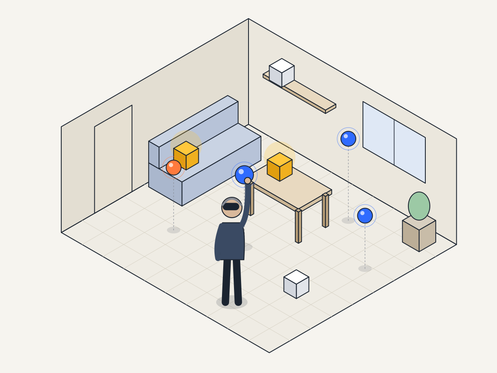
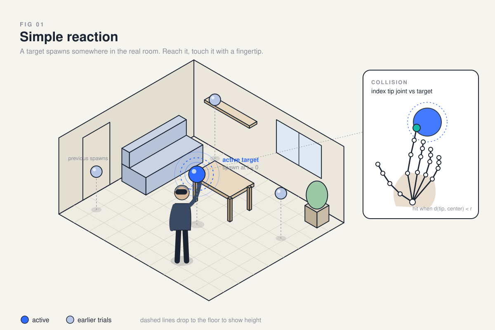
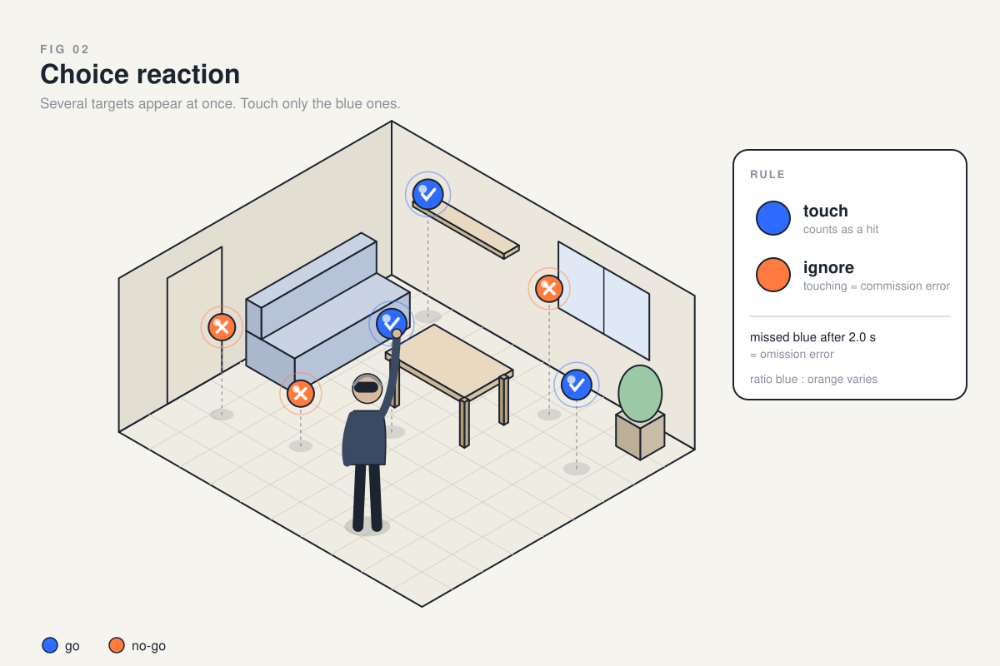
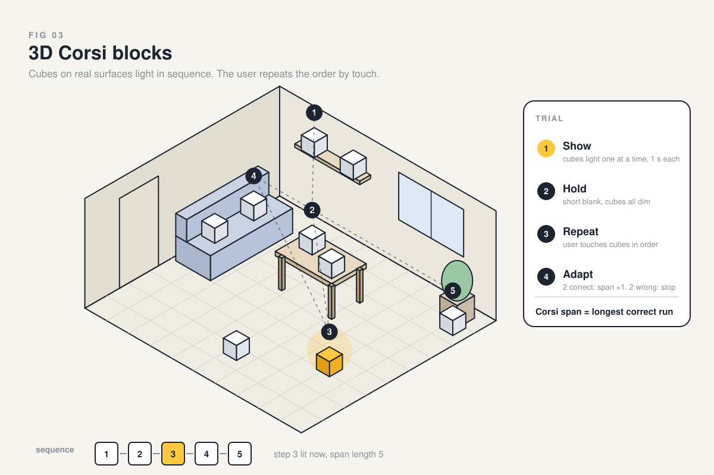
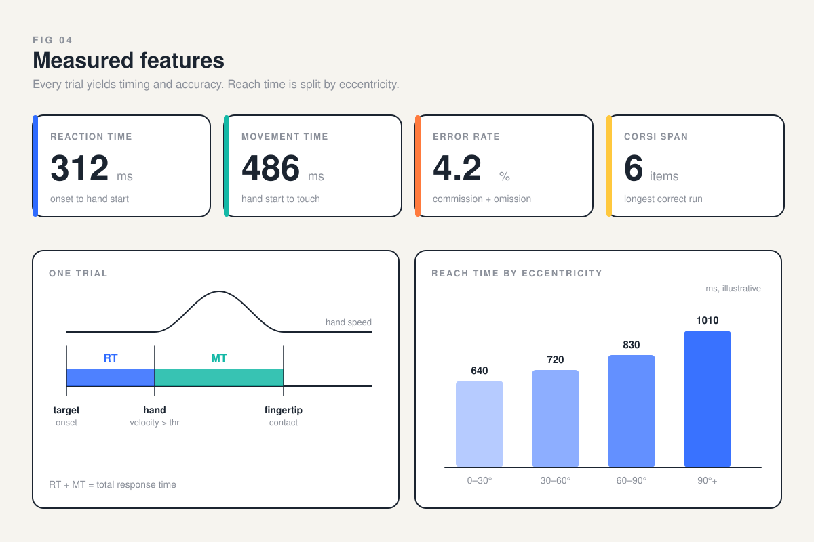
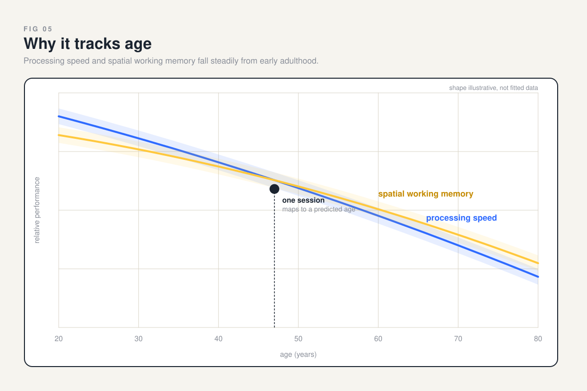
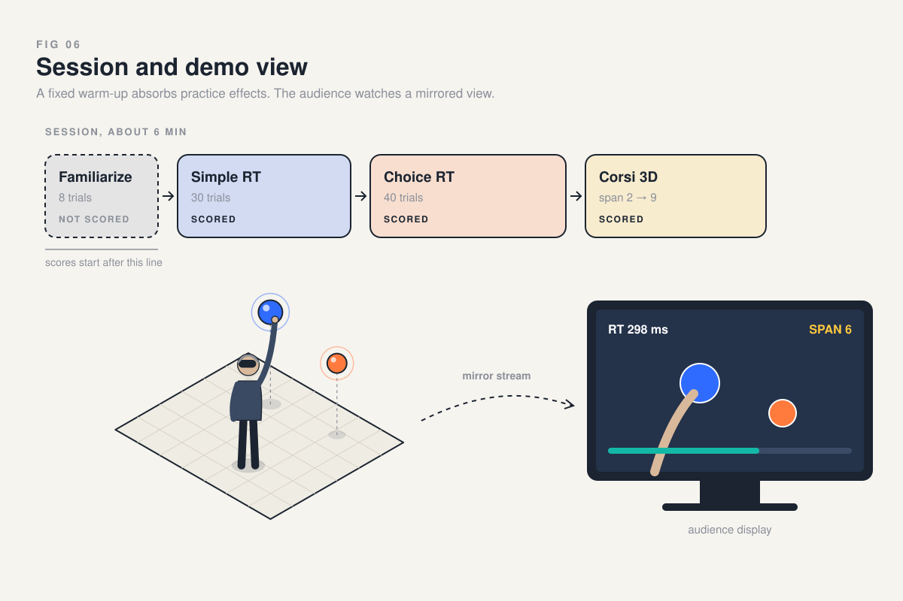

Concept 03
Spatial reaction and memory
Targets appear around the real room. The user reaches and touches them with a fingertip, tracked as a collision against the hand joint. A 3D Corsi task lights cubes on room surfaces in sequence and the user repeats the order.
Output: reaction time, movement time, error rate, Corsi span, and reach time split by target eccentricity.
CORE PICK
TASKOne target at a random point in the room. Trial ends when the index tip joint enters the target radius.
MEASURESReaction time to hand start, movement time to contact.
PLACEMENTSpawn points sampled from the scanned room volume within arm reach.

TASKBlue and orange targets appear together. Only blue counts.
ERRORSTouching orange is a commission error. A blue left untouched past the window is an omission error.
LOADChoice adds a decision step, so choice RT minus simple RT isolates decision time.

TASKCubes anchored to table, shelf, sofa and floor. A sequence lights, then the user touches it back in order.
ADAPTIVESpan grows by one after two correct trials and stops after two failures at a length.
SCORECorsi span is the longest sequence repeated correctly.

FEATURESReaction time, movement time, error rate, Corsi span.
ECCENTRICITYReach time binned by angle between head forward and target. Targets behind the user need a head turn first.
VALUESNumbers shown are placeholders for layout.

WHY IT AGESProcessing speed and spatial working memory decline steadily from early adulthood, with well documented curves.
USEA session's features place the user on these curves to estimate a functional age.
NOTECurve shapes are drawn for illustration.

DEMOFast and game-like. The audience follows along on the mirrored view.
RISKPractice effects inflate scores on repeat sessions.
MITIGATIONA fixed short familiarization round runs first. Only trials after it are scored.